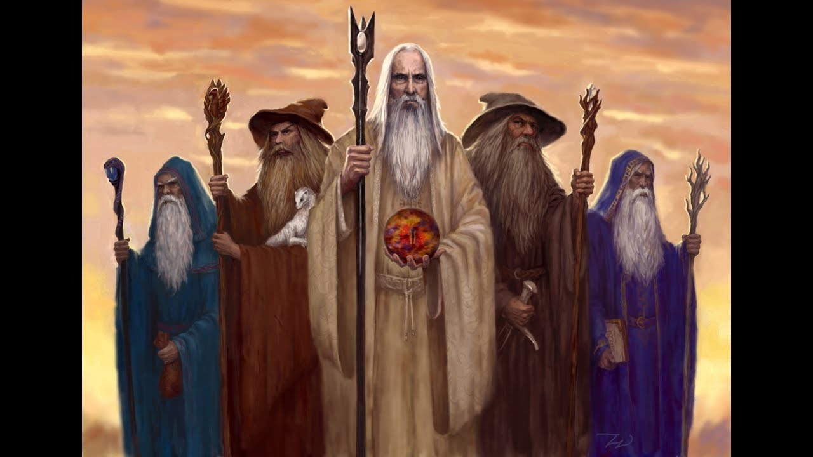
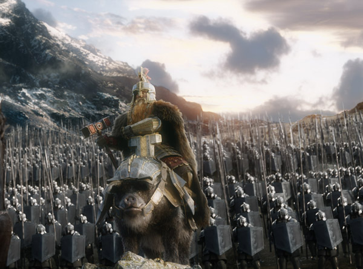
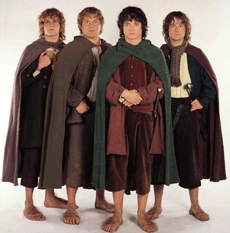
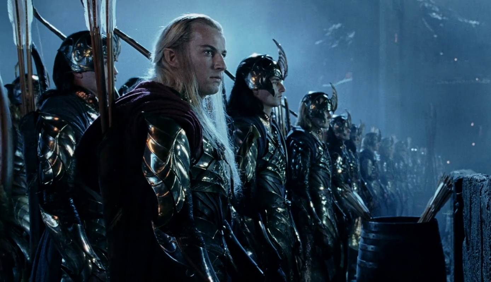

List of Species
| Istari A.K.A Wizards |
The wizards of Middle Earth are a group of magically enhanced species. And, tend to be mysterious. There are five different wizards the white, the brown, the gray and the two blues. |
 |
| |
| Dwarves |
Dwarves are another species in Middle Earth. They are smaller than a human and taller than a hobbit. Most of them are stubborn. But they are friendly. |
 |
| |
| Hobbits |
Hobbits live on Middle Earth and pretty much always save the day. As you know they are shorter than a dwarf but they are much more peaceful than a dwarf and less stubborn. They eat five meals a day and don't
where shoes. They don't wear shoes because their feet are hairy and the bottom of their feet are like leather. |
 |
| |
| Elves |
Whenever someone says elves people usually think small but in the Hobbit and Lord of the Rings they are tall. They are a very graceful species. There are different tribes. They have pointed ears and have
gray eyes. |
 |